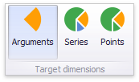

Drill-Down
The built-in drill-down capability allows you to change the detail level of data displayed in dashboard items on the fly. To learn more about drill-down concepts common to all dashboard items, see the Drill-Down topic.
The Pie dashboard item supports drill-down on argument or series values.
Drill Down on an Argument
When drill down on an argument is enabled, you can click a pie segment to view a detail diagram for the corresponding argument value.

Note
When Filtering by Arguments is enabled, you can view the details by double-clicking a pie segment.
Drill down on an argument requires that the Arguments section contains several data items, from the least detailed to the most detailed item.

Note
In OLAP mode, you can perform drill-down for either a hierarchy data item or several dimension attributes.
To enable drill down on an argument, click the Drill Down button in the Data Ribbon tab (or the  button if you are using the toolbar menu)...
button if you are using the toolbar menu)...

...and the Arguments button (or the  button if you are using the toolbar menu).
button if you are using the toolbar menu).

Drill Down on a Series
When drill down on a series is enabled, you can click a pie chart to view a detail diagram for the corresponding series value.

Note
When Filtering by Series is enabled, you can view the details by double-clicking a pie chart.
Drill down on a series requires that the Series section contains several data items, from the least detailed to the most detailed item.

Note
In OLAP mode, you can perform drill-down for either a hierarchy data item or several dimension attributes.
To enable drill down on a series, click the Drill Down button in the Data Ribbon tab (or the button if you are using the toolbar menu)...
...and the Series button (or the button if you are using the toolbar menu).

Drill Up
To return to the previous detail level (drill up), use the Drill Up button (the  icon) in the caption area of the Pie dashboard item, or the Drill Up command in the context menu.
icon) in the caption area of the Pie dashboard item, or the Drill Up command in the context menu.